The Five Star DXers Association
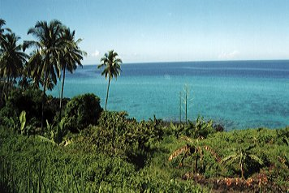
FSDXA DXpedition
08.Feb-28.Feb.2001
|
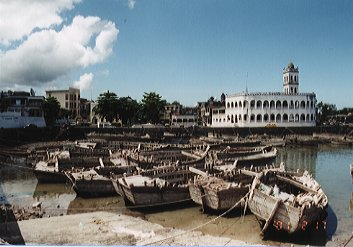 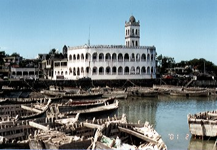 コモロの首都モロニ(Moroni)の港
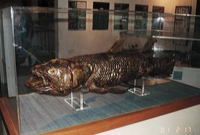 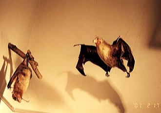 モロニの博物館に展示されているシーラカンス(左)とカラスの2倍ほどある大コウモリの剥製
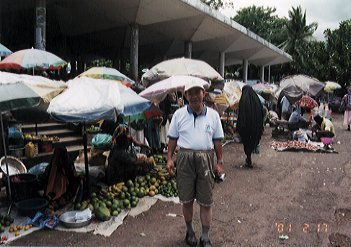 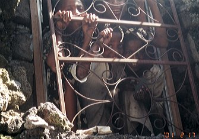 モロニの市場でJA3AER・荒川さん／"外人"の来訪に窓に群がる地元の子供達
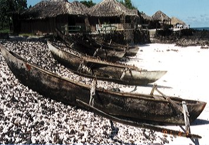 コモロの小動物・リマを肩にJA1RJU／インド洋側の海岸は白い砂が綺麗
Le Galawa Beach Hotel
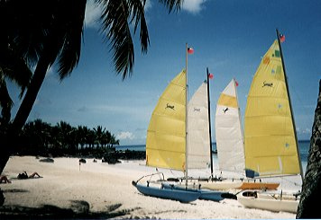 ヨットが並ぶホテル前のビーチ
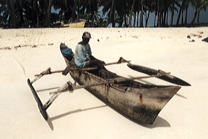 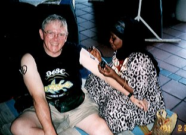 ホテルの海岸で客待ちをするボート／ロビーには"入れ墨師"も...客はW3WL・Wes
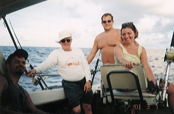 片道２時間のトローリングも楽しめる (左から5B4WN、W3WL、UT8LL & XYL・Tatiana)
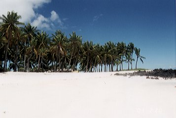 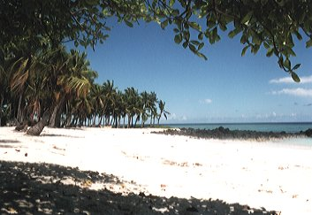 コバルト色の海と白い砂が綺麗な海岸
D68C Homepage |
 |
D68C(1) DXpedition |
D68C(2) Projects |
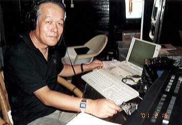 |
D68C(3) Operating |
 |
D68C(5) Album |